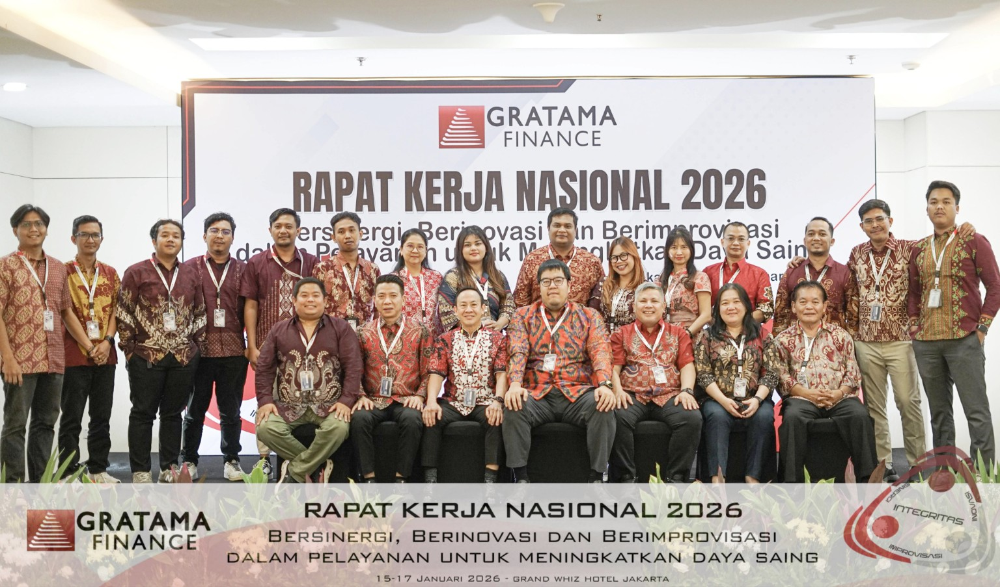
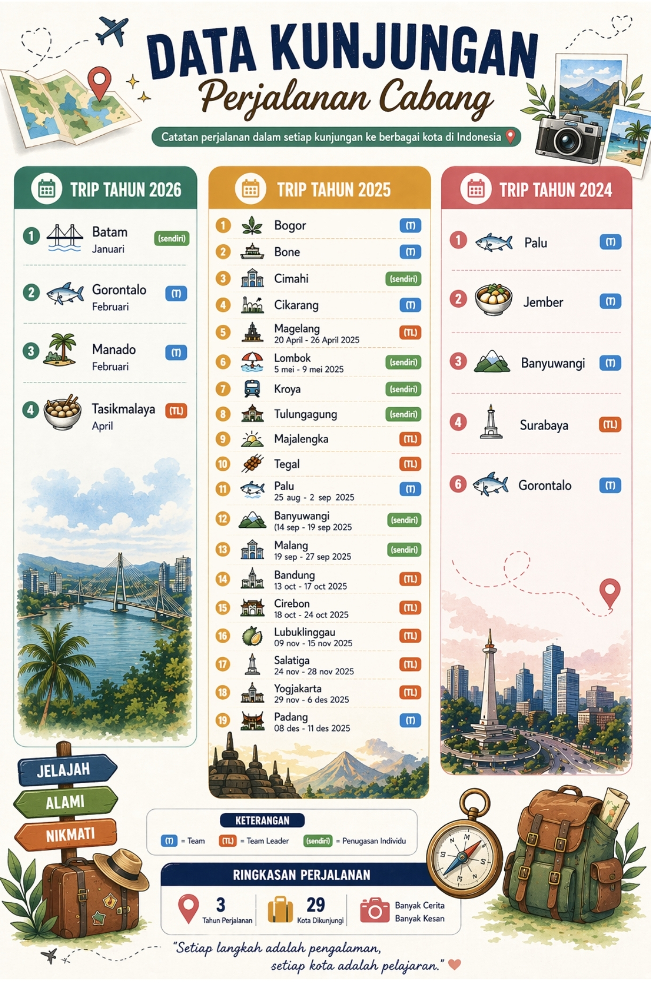
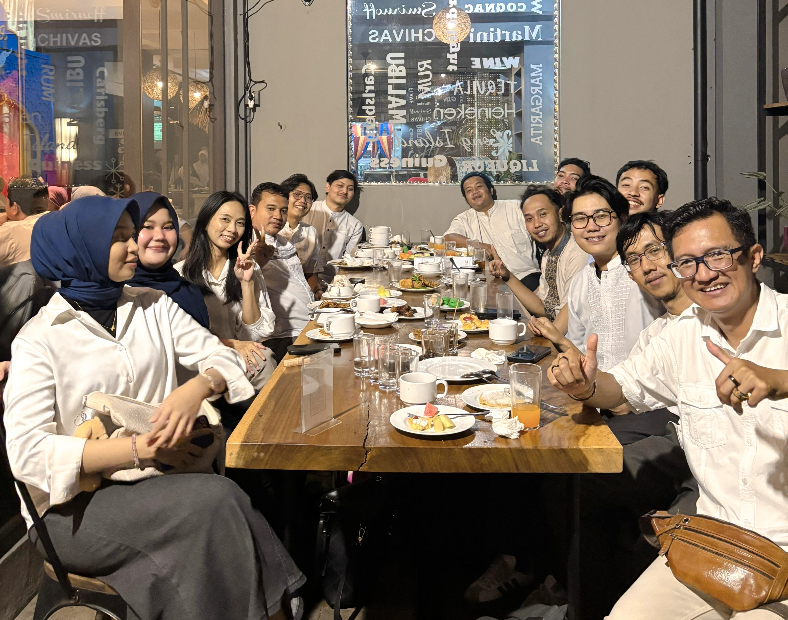

05
Gallery Kegiatan
Dokumentasi kegiatan profesional dalam pelaksanaan audit, verification, internal control dan risk assessment.

Gratama Finance
Rapat Kerja Nasional

Kunjungan Cabang
Assessment aktivitas dealer/showroom dan proses pembiayaan.

Team SKAI
Kolaborasi tim dalam pelaksanan audit, penguatan pengendalian internal.

Team Cabang
Activities

Exit Meeting
Penyampaian hasil audit dan pembahasan tindak lanjut.

Audit Reporting
Analisis temuan, penyusunan laporan dan rekomendasi perbaikan.